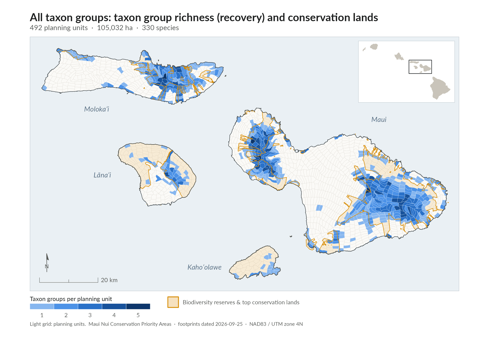
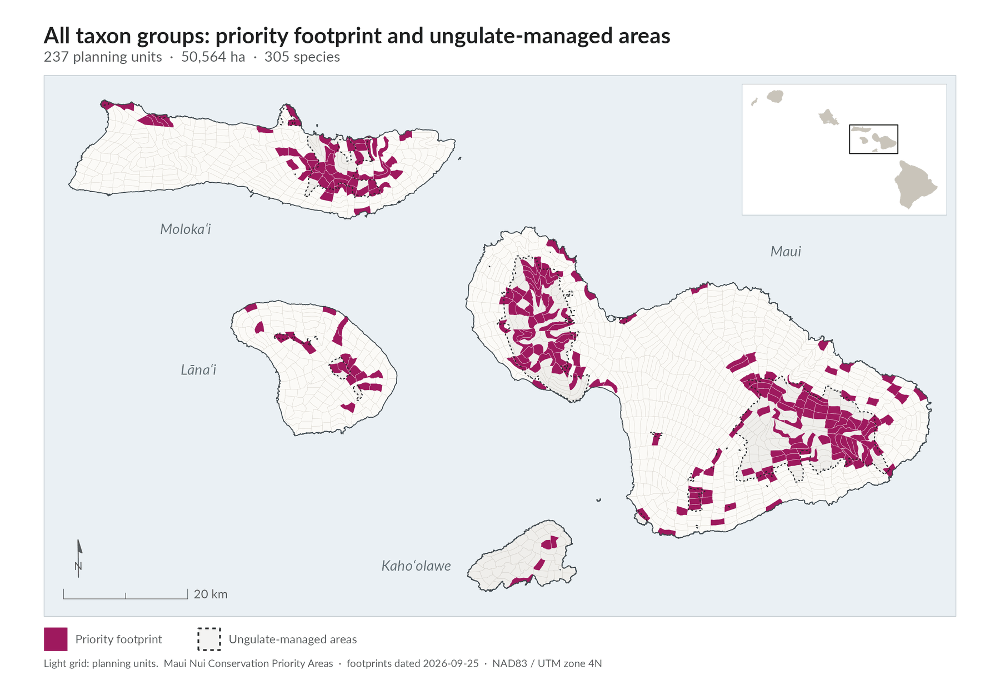
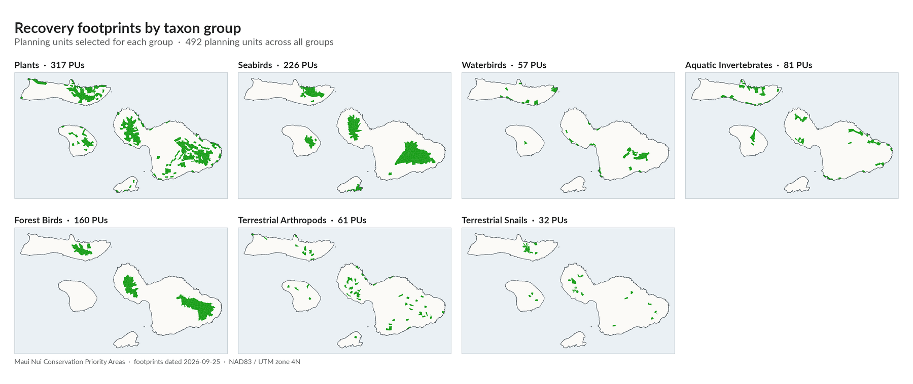
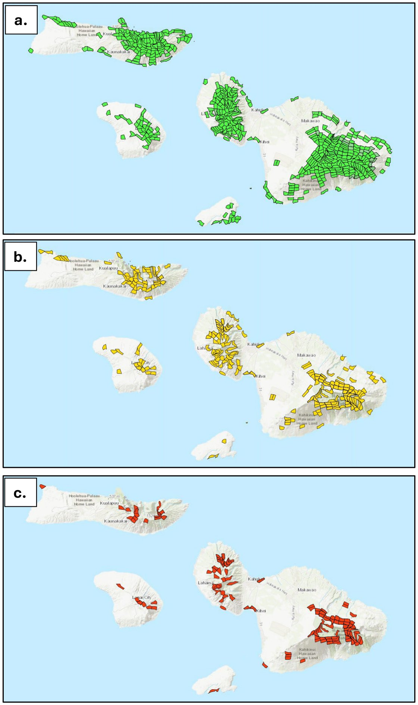
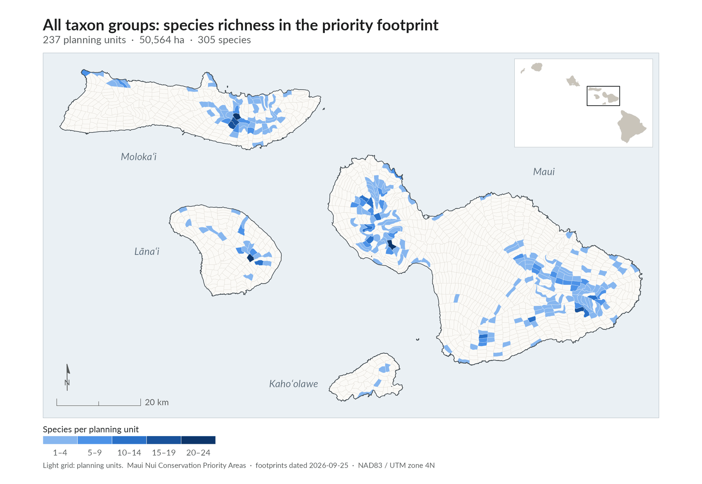
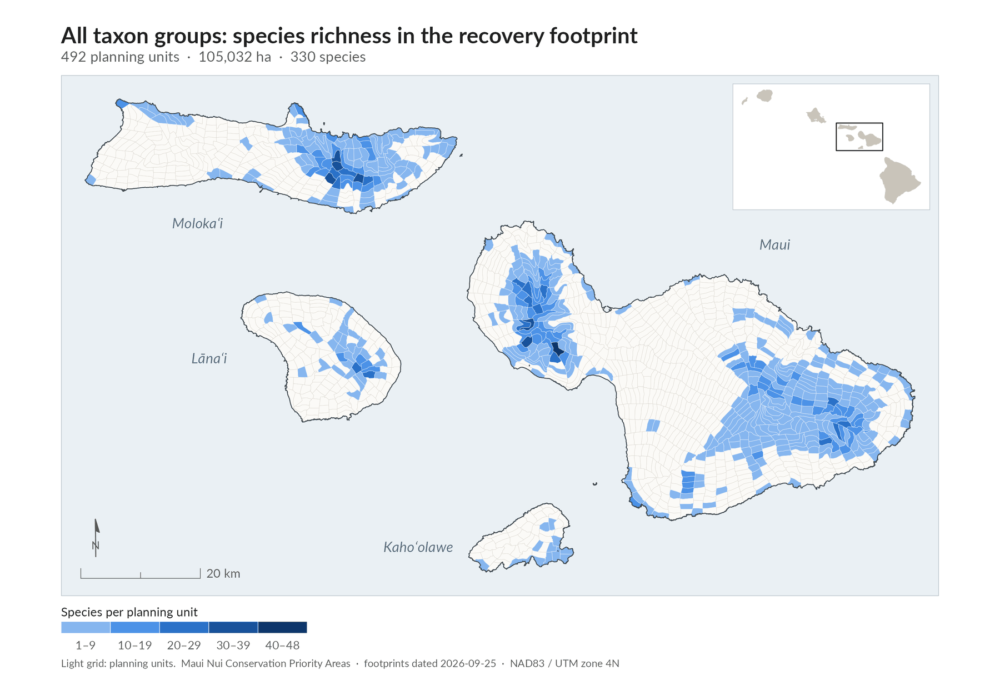
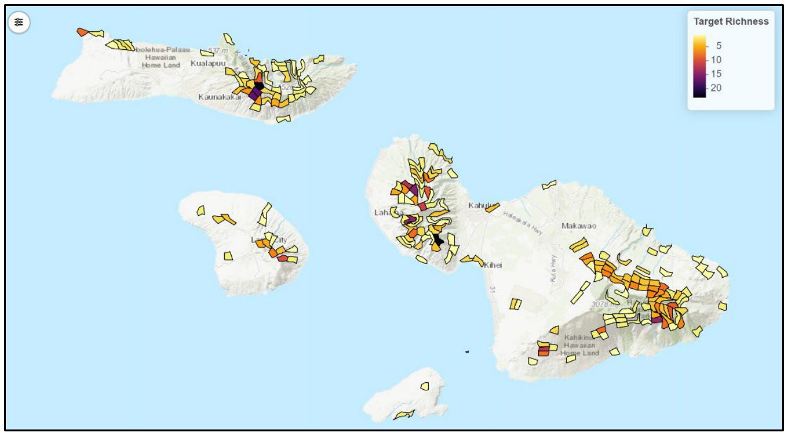

Planning units: the building blocks
To map where species can recover, the plan divided the Maui Nui landscape into a network of about 1,400 medium-sized planning units (PUs).plan p.12, lines 762-765; p.122 lines 4847-4850 Each planning unit is roughly 2 km². Its boundaries follow watersheds, natural barriers, and elevation bands.plan p.122, lines 4848-4850
A planning unit is sized to support a single population of an at-risk species.plan p.122, lines 4851-4852 Footprints are built up as collections of planning units. Each unit records which species it was selected for, how suitable its habitat is for each species, and whether the selection rests on occurrence records or on model predictions.plan p.A1-4, lines 5098-5100
Recovery footprints and priority footprints
The plan produces two main kinds of conservation footprint.plan p.A1-4, lines 5085-5097
Recovery footprints
A recovery footprint is the set of planning units that contain the existing or restorable habitat needed for an at-risk species, or a whole species group, to reach its recovery goals.plan p.122, lines 4870-4873; p.21 lines 1063-1065 It shows where active management can support populations as they grow toward recovery.plan p.A1-4, lines 5091-5093
Priority footprints
A priority footprint is a smaller subset nested inside a recovery footprint. It identifies priority areas where both preventing extinction and recovery goals can be advanced.plan p.A1-4, lines 5094-5095 Priority footprints advance recovery but are not expected to meet recovery goals on their own. They are generally the most important places to focus MNLCP recovery actions in the near term.plan p.81, lines 3264-3267; p.21 lines 1066-1069
Initial implementation areas
Some groups have large recovery and priority footprints. For these, the plan narrows the footprint further into suggested starting points for implementation.plan p.81, lines 3272-3274; p.27 lines 1249-1255; p.A1-4 lines 5096-5097
Recovery footprints show everything species need to recover. Priority footprints show where to start.
How footprints were made
The footprints come from the plan's spatial prioritization, led by USGS and carried out through the TFE-SCP comprehensive planning process.plan p.122 lines 4875-4880; messaging guidelines DOFAW coordinated taxon expert teams, and experts validated and refined draft footprints in collaborative review sessions.


There were two pathways:
- Algorithmic pathway (Plants, Terrestrial arthropods, Terrestrial snails). These groups have many species. The OptimTFE prioritization algorithm built many candidate footprints that each meet every species' targets. Experts and land managers then compared candidates on footprint area, habitat quality, overlap with biodiversity reserves, ungulate management, accessibility, fire risk, and climate resilience.plan p.12-13, lines 758-769; p.A1-5 lines 5136-5146
- Expert-led pathway (Forest birds, Seabirds, Waterbirds, Aquatic invertebrates). These groups have few species and strong existing expert knowledge, so specialists delineated priority areas directly through iterative collaborative review.plan p.A1-5, lines 5106-5112
The Hawaiian hoary bat (ʻōpeʻapeʻa) has no footprint of its own. Its recovery habitat is the combined recovery footprints of Forest birds, Seabirds, Waterbirds, Plants, Aquatic invertebrates, and Terrestrial arthropods. There is no priority footprint for the bat.plan p.78-79, lines 3163-3175
Combined results across all groups
When the footprints of all eight taxonomic groups are combined, the recovery footprint includes 492 planning units covering 1,050 km².plan p.81, lines 3244-3245 It provides recovery habitat for 250 at-risk species.plan p.81, line 3246 It also holds candidate exclosure sites for all 49 at-risk Terrestrial snails, which have exclosure locations but not recovery habitat, for 299 species in all.plan p.81, lines 3248-3249; p.vi lines 237-238
From a landscape perspective, the combined recovery footprint:plan p.81, lines 3252-3262
- lies mainly on lands already oriented toward conservation (65.7 percent);
- spans all four Maui Nui islands, with the upland areas of Haleakalā, West Maui, East Molokaʻi, and Lānaʻihale being the most significant;
- already has at least some ungulate fencing on about half of its area (50 percent);
- is, on average, native habitat or a mix of native and non-native species; and
- generally has above-average climate resilience.
The combined priority footprint includes 216 planning units covering 457 km². It provides habitat for 267 at-risk species and is about 43 percent of the size of the full recovery footprint.plan p.81, lines 3267-3270




Map as printed in the plan (Figure 19)Details

Places with many at-risk species
The Adaptive Conservation Planner can highlight planning units with exceptionally high numbers of at-risk species, or units holding species facing imminent extinction. Managers can use this to work more efficiently.plan p.83, lines 3299-3305


Map as printed in the plan (Figure 20)Details

What footprints are, and what they are not
- Footprints are decision support. The MNLCP is state-led and practitioner-driven. It provides flexible guidance to managers rather than top-down prescriptive mandates.plan p.8, lines 619-620, 640; p.122 lines 4823-4825
- Footprints are landscape-scale. They answer "where should we focus?" A planning unit may be hundreds of hectares. Exactly where to outplant, fence, or survey within a planning unit is worked out by field teams using finer-scale tools such as Find My Microhabitat.plan p.122, lines 4852-4854; App 5 lines 7431-7460
- Footprints are living products. They can be updated as conditions, knowledge, and available resources change, and the Conservation Planner is where they are inspected, refined, and maintained.plan p.8, lines 641-643; App 5 line 7365
- Priority footprints are not the whole job. They are where to start, not everything needed for recovery.plan p.81, lines 3264-3267
Species not yet on the map
There are 143 at-risk species that lack enough information to reliably identify habitat and planning units for their recovery.plan p.81, lines 3246-3248 Most are Terrestrial arthropods.plan p.vii, lines 247-248 Of the 143, 82 are targeted for multi-species area surveys and 61 for species-specific surveys.plan Table 1 p.19, lines 989-999
The plan sets out targeted surveys to learn these species' habitat needs, so they can be added to the recovery footprints over time.plan p.81, lines 3249-3251; p.vii lines 247-249; p.20 lines 1012-1016 The intent is to identify habitat needs and conservation strategies for all 442 at-risk species.plan p.20, lines 1016-1017
How to read the map
- Pick a view. Start with all groups combined, or choose a single species group from the layer menu.
- Switch between recovery and priority. Recovery footprints show the full area needed for recovery. Priority footprints show where to start. Each priority footprint sits inside its recovery footprint.
- Click a planning unit to see which groups and how many at-risk species it was selected for.
- Use the richness view to see how many at-risk species each planning unit supports. Darker colors mean more species.
- Remember the scale. Each shape is a planning unit of about 2 km², not a specific site for fencing or planting.
The map shows the footprint release used in the Adaptive Conservation Planner (September 2026). Some counts differ slightly from the figures in the plan text, because footprints are living products that continue to be refined.
Map legend
- Recovery footprint (green): Planning units with existing or restorable habitat needed for the group's at-risk species to reach recovery goals.
- Priority footprint (yellow): The subset of the recovery footprint where both preventing extinction and recovery goals can be advanced; the most important places to start.
- Combined footprint (all groups): All species groups' footprints merged into one layer. Overlapping units are counted once.
- Species richness: Number of at-risk species with targets in each planning unit. Darker shading means more species.
- Terrestrial snail sites: Candidate kīpuka kāhuli exclosure sites (managed predator-free refuges enclosed by a predator-proof fence). Unlike other groups, the snail network is built from candidate exclosure sites rather than standard planning units. The recovery layer is the 32-site exclosure network with three exclosures per species; the priority layer is the 14-site network that gives each of the 49 at-risk snail species one protected population.plan p.A1-7, lines 5203-5216; messaging guidelines
- Aquatic invertebrates: Planning units containing streams, wetlands, or anchialine pools selected at the watershed scale.plan p.A1-5, lines 5126-5129
- Hawaiian hoary bat: No separate layer. The bat's recovery habitat is the combined footprints of six other groups.plan p.79, lines 3173-3175
- Island outlines and basemap: For orientation only.
For practitioners: footprint types and terminologyDetails
The plan names three nested levels of spatially explicit habitat delineation for each taxonomic group: the full recovery footprint (adequate habitat for recovery), the priority recovery footprint (the most important recovery areas), and the initial implementation footprint (suggested starting points).plan p.27, lines 1249-1255 Appendix 1 calls the third level "implementation subsets" that further prioritize within the recovery footprint to guide near-term action staging.plan p.A1-4, lines 5096-5097
All group footprints, algorithmic and expert-led, can be viewed together or one at a time in the Conservation Planner, which also shows the species-level information for each planning unit. Where footprints overlap, actions for one group can benefit others in the same landscape.plan p.A1-5, lines 5102-5104, 5130-5133
For Terrestrial snails, the footprint places predator-free kīpuka kāhuli exclosures so each species can persist despite ongoing threats. It is designed to prevent extinction and enable future recovery. It does not address landscape-scale threats to snails.plan p.A1-7 to A1-8, lines 5203-5221; p.21 lines 1071-1080